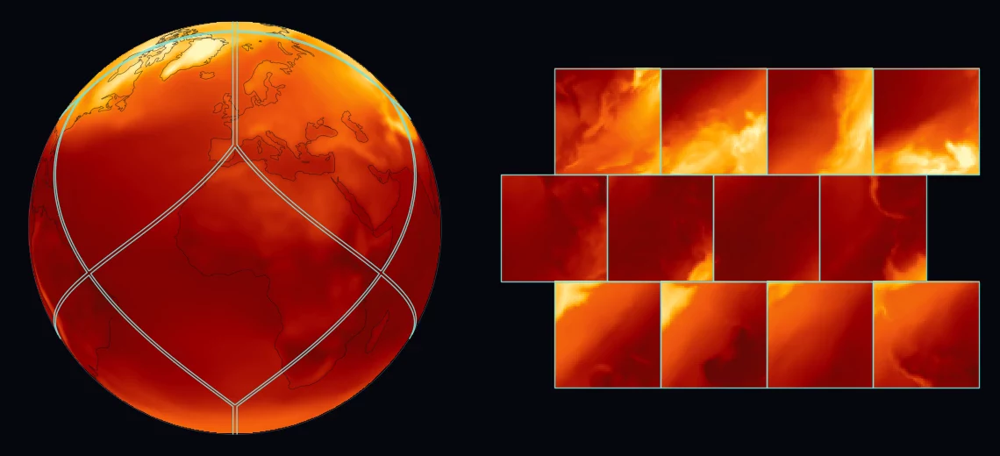
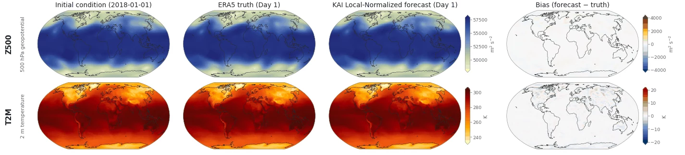

Research note · Global weather forecasting
KAI-α: how much model does a global forecast need?
An ultralight convolutional architecture for medium-range weather prediction, together with the engineering needed to train it and examine where its forecasts succeed or fail.
The work
I co-developed KAI-α and built the end-to-end training and inference pipelines from scratch. A modular evaluation framework makes it possible to benchmark different architectures through a shared workflow.
The project reports competitive medium-range forecasting skill with approximately eight times fewer parameters than GraphCast and FourCastNet. The visual comparisons below show particular forecast fields and their errors; they are not a substitute for aggregate benchmark scores.
Representing
the globe
The supplied research visualizations include a HEALPix representation. The globe and its unfolded faces show how a spherical field can be organized into local patches for computation.

{kind=link}
10-day rollout
Each prediction becomes the input to the next step. This ten-day excerpt follows the KAI local-normalized configuration (13.46 million parameters, HEALPix nside 64), initialized on 1 January 2018.
Reading forecast and truth side by side helps identify displacement and amplitude errors; the bias maps show the differences directly.

{kind=link}
Comparative
error structure
These maps compare KAI-α temperature forecasts with ground truth and place its bias alongside GraphCast, Pangu-Weather, and IFS HRES. A shared bias scale makes the spatial pattern and magnitude of errors easier to inspect.

Current status
Research is ongoing at KAIST MetaEarth. The code is currently private. I’m interested in conversations about compact forecasting architectures, stable autoregressive prediction, and evaluation systems that make model comparisons easier to reproduce.